ヒーローウォーズ アライアンスの全タリスマンガイド
- 著者: Alexandre Domingos. .
タリスマンは Hero Wars Alliance における最大級の戦力上昇要素のひとつですが、多くのプレイヤーにとって難しいのは入手場所だけではありません。 本当に重要なのは次の点です。あるヒーローにタリスマンが2種類ある場合、まずどちらを優先すべきか？
このガイドは、各ヒーローについて タリスマン1 と タリスマン2 のどちらを選ぶべきかを、初心者でも判断しやすいように整理しています。 そのうえで、現在タリスマンを入手できる場所も解説します。Talisman Fever、Keepers' Shop、そして Frontier Shop を含めて説明するので、今月のローテーションに合わせて優先順位を決めやすくなります。

目次
タリスマンの役割
タリスマンは特定のヒーローに紐づいた特別な装備です。装備するとそのヒーローのステータスが変化し、戦闘での役割や性能が大きく変わることがあります。 多くのヒーローにとって、タリスマンは小さな強化ではありません。より速く、より硬く、より強く、あるいは特定の役割でより有用にしてくれる大きな強化です。
一部のヒーローは複数のタリスマンを持っていますが、同時に装備できるのは 1つだけ です。つまり、どちらを選ぶかが非常に重要になります。 あるタリスマンは攻撃向きで、別のタリスマンは防衛、アリーナ、あるいは特定の編成に向いている場合があります。
初心者であれば、ゲーム内のすべてのタリスマンを集めようとする必要はありません。序盤では現実的ではないからです。 最初の目標はシンプルで十分です。毎日使っているヒーローのタリスマンをひとつ確保し、強化素材の仕組みを理解することです。
Alexandreのヒント: 初心者がよくする勘違いのひとつは、タリスマンがスキンと同じ仕組みだと思うことですが、これは別のシステムです。スキンを強化すると、そのステータスはヒーローに永久的に残り、後から別のスキンに切り替えても戦闘中の見た目が変わるだけです。タリスマンはそうではありません。実際に有効になるステータスは装備中のタリスマンによって変わるため、別のタリスマンに切り替えると、そのヒーローのビルドや役割がすぐに変化します。
全タリスマンガイド: どのタリスマンが最適？
下の表は、各ヒーローで何を優先すべきかを素早く判断するための最短ルートです。最後の列が 第1 なら、通常は1つ目のタリスマンが長期的により良い投資です。 第2 と書かれている場合は、2つ目のタリスマンの方が一般的に強力です。おすすめがゲームモードによって変わる場合は、そのまま表に注記しています。
2つ目のタリスマン欄が空欄の場合、そのヒーローには現時点で重要なタリスマンが1つだけであることを意味する場合がほとんどです。初心者にとって、この表は編成事情を無視する絶対ルールではなく、あくまで優先度の目安として使うべきですが、資源が限られているときの出発点としては最も役立ちます。
| ヒーロー | タリスマン1 | タリスマン2 | おすすめ |
|---|---|---|---|
 エイダン (Aidan) エイダン (Aidan) | 知力 & 魔法攻撃 | 頑強さ & 体力 | 第1 |
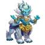 アルバノール (Alvanor) | 知力 & 体力 | 魔法クリティカル率 & アーマー | 第1 |
 アミラ (Amira) アミラ (Amira) | 知力 & 体力 | アーマー & 魔法クリティカル率 | 第2 |
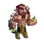 アンドバリ (Andvari) | 力 & 体力 | 魔法反射 & 物理攻撃 | 第1 |
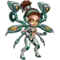 アラクネ (Arachne) | 知力 & 魔法攻撃 | 魔法クリティカル率 & 魔法貫通 | 第2 |
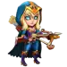 アルテミス (Artemis) | 敏捷性 & 物理攻撃 | クリティカル率 & アーマー | 第2 |
 アスタロス (Astaroth) アスタロス (Astaroth) | 力 & 魔法防御 | 体力 & アーマー | 第2 |
 アストリッド (Astrid) アストリッド (Astrid) | 敏捷性 & アーマー貫通 | 物理攻撃 & クリティカル率 | 第1 |
 オーロラ (Aurora) オーロラ (Aurora) | 力 & 回避 | 魔法攻撃 & 魔法貫通 | 第1 |
 バーナ (Byrna) バーナ (Byrna) | 知力 & 魔法貫通 | アーマー & 魔法反射 | 第1 |
 カスケード (Cascade) カスケード (Cascade) | 敏捷性 & 物理攻撃 | 体力 & アーマー | 第1 |
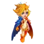 セレステ (Celeste) | 知力 & アーマー | 体力 & 魔法攻撃 | 第2 |
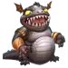 チャバ (Chabba) | 力 & 体力 | 魔法防御 & アーマー | 第1 |
 クリーバー (Cleaver) クリーバー (Cleaver) | 力 & 体力 | クリティカル率 & 頑強さ | 第1 |
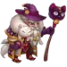 コーネリウス (Cornelius) | 知力 & 魔法攻撃 | 体力 & アーマー貫通 | 第2 |
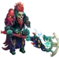 コーブス (Corvus) | 力 & 物理攻撃 | 魔法防御 & アーマー | 第2 |
 クロウ (Crow) クロウ (Crow) | - | ||
 ダンテ (Dante) ダンテ (Dante) | 敏捷性 & クリティカル率 | 物理攻撃 & 回避 | 第2 |
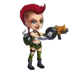 デアデビル (Daredevil) | 敏捷性 & アーマー貫通 | アーマー貫通 & 物理攻撃 | 第2 |
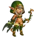 ダークスター (Dark Star) | 敏捷性 & 物理攻撃 | クリティカル率 & アーマー貫通 | 第2 |
 ドリアン (Dorian) ドリアン (Dorian) | 知力 & 魔法貫通 | アーマー & 体力 | 第2 |
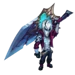 ドレイン (Drayne) | 力 & 物理攻撃 | アーマー貫通 & クラッシング | 第1 |
 エレクトラ (Electra) エレクトラ (Electra) | 力 & 頑強さ | 魔法反射 & 魔法攻撃 | 第2 |
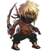 エルミル (Elmir) | 敏捷性 & 物理攻撃 | 回避 & 体力 | 第2 |
フェイスレス (Faceless) | 知力 & 体力 | アーマー & 魔法攻撃 | 第1 |
 ファフニール (Fafnir) ファフニール (Fafnir) | 力 & 物理攻撃 | 物理攻撃 & アーマー | 第1 |
 フォリオ (Folio) フォリオ (Folio) | 知力 & 魔法攻撃 | アーマー & 頑強さ | 第2 |
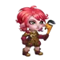 フォックス (Fox) | 敏捷性 & 物理攻撃 | クリティカル率 & 体力 | 第1 |
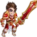 ギャラハッド (Galahad) | 力 & クリティカル率 | 物理攻撃 & アーマー貫通 | 第2 |
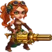 ジンジャー (Ginger) | 敏捷性 & アーマー貫通 | クリティカル率 & クリティカル率 | 第2 |
 グース (Guus) グース (Guus) | 力 & クリティカル率 | アーマー & 物理攻撃 | 第2 |
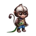 ハイディ (Heidi) | 知力 & アーマー | 回避 & 魔法攻撃 | 第2 |
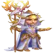 ヘリオス (Helios) | 知力 & 魔法貫通 | 魔法クリティカル率 & 魔法攻撃 | 第2 |
 アイリス (Iris) アイリス (Iris) | 知力 & 魔法防御 | アーマー & 魔法貫通 | 第2 |
 アイザック (Isaac) アイザック (Isaac) | 敏捷性 & 物理攻撃 | 頑強さ & クリティカル率 | 第2 |
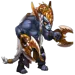 イシュマエル (Ishmael) | 敏捷性 & 物理攻撃 | アーマー & クリティカル率 | 第2 |
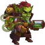 ジェット (Jet) | 知力 & 魔法攻撃 | 回避 & 体力 | 第1 |
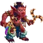 ジュウ (Jhu) | 力 & クリティカル率 | 物理攻撃 & アーマー | 第2 |
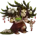 ヨルガン (Jorgen) | 力 & 魔法防御 | 魔法攻撃 & アーマー | 第2 |
 ジャッジ (Judge) ジャッジ (Judge) | 知力 & 魔法攻撃 | アーマー & 魔法貫通 | 第1 |
 ジュリアス (Julius) ジュリアス (Julius) | 力 & アーマー貫通 | 物理攻撃 & 頑強さ | 第2 |
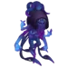 カーク (K'arkh) | 敏捷性 & 魔法防御 | 物理攻撃 & 吸血 | 第2 |
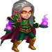 カイ (Kai) | 知力 & 魔法攻撃 | 魔法貫通 & アーマー | 第2 |
 カイラ (Kayla) カイラ (Kayla) | 敏捷性 & 物理攻撃 | アーマー貫通 & クリティカル率 | 第2 |
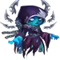 ケイラ (Keira) | 敏捷性 & 物理攻撃 | 体力 & 魔法防御 | 第1 |
 ケンドル (Kendle) ケンドル (Kendle) | 第2 | ||
 クリスタ (Krista) クリスタ (Krista) | 知力 & 魔法攻撃 | 体力 & 魔法貫通 | 第2 |
 ララ・クロフト (Lara Croft) ララ・クロフト (Lara Croft) | 敏捷性 & アーマー貫通 | ||
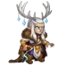 ラース (Lars) | 知力 & 魔法攻撃 | 魔法攻撃 & アーマー | 第2 |
 レオネル (Leonel) レオネル (Leonel) | 敏捷性 & 体力 | ||
 リアン (Lian) リアン (Lian) | 知力 & 魔法攻撃 | アーマー & 体力 | 第2 |
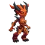 リリス (Lilith) | 力 & アーマー | 体力 & 魔法攻撃 | 第2 |
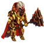 ルーサー (Luther) | 力 & 体力 | 物理攻撃 & 頑強さ | 第1 |
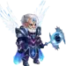 マーカス (Markus) | 知力 & 体力 | アーマー & 魔法攻撃 | 第2 |
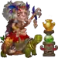 マーサ (Martha) | 知力 & 体力 | 魔法攻撃 & アーマー | 第1 |
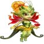 マヤ (Maya) | 知力 & 魔法攻撃 | アーマー & 体力 | 第1 |
 美雨 (Miu) 美雨 (Miu) | 第2 | ||
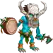 モージョー (Mojo) | 知力 & 魔法攻撃 | アーマー & 魔法クリティカル率 | 第2 |
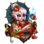 モリガン (Morrigan) | 知力 & 体力 | アーマー & 魔法攻撃 | 第1 |
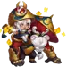 マッシーとシュルーム (Mushy) | 知力 & アーマー | 魔法クリティカル率 & 頑強さ | PvPは第1、PvEは第2 |
 ネブラ (Nebula) ネブラ (Nebula) | 敏捷性 & 物理攻撃 | アーマー & 回避 | 第1 |
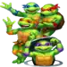 ニンジャ・タートルズ (Ninja Turtles) | 敏捷性 & アーマー | ||
 オクタヴィア (Octavia) オクタヴィア (Octavia) | 敏捷性 & 体力 | 頑強さ & 物理攻撃 | 第1 |
 オリオン (Orion) オリオン (Orion) | 知力 & アーマー | 頑強さ & 魔法攻撃 | 第2 |
 オヤ (Oya) オヤ (Oya) | 力 & クリティカル率 | 物理攻撃 & クラッシング | 第2 |
 ピーチ (Peech) ピーチ (Peech) | 敏捷性 & 物理攻撃 | 体力 & クリティカル率 | 第2 |
 フォボス (Phobos) フォボス (Phobos) | 知力 & 魔法攻撃 | アーマー & 体力 | 第1 |
 ポラリス (Polaris) ポラリス (Polaris) | 知力 & 魔法クリティカル率 | 知力 & 魔法クリティカル率 | 第2 |
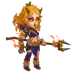 チン・マオ (QingMao) | 敏捷性 & クリティカル率 | 体力 & 物理攻撃 | 第1 |
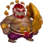 ルーファス (Rufus) | 力 & 体力 | アーマー & 魔法攻撃 | 第2 |
 サトリ (Satori) サトリ (Satori) | 知力 & 魔法貫通 | アーマー & 体力 | 中列なら第1、前列なら第2 |
 セバスチャン (Sebastian) セバスチャン (Sebastian) | 敏捷性 & アーマー | 物理攻撃 & クリティカル率 | 第2 |
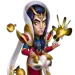 ソレイル (Soleil) | 知力 & アーマー | 魔法反射 & 体力 | 第2 |
 ソムナ (Somna) ソムナ (Somna) | 敏捷性 & 体力 | 頑強さ & 物理攻撃 | 第2 |
 テンプス (Tempus) テンプス (Tempus) | 知力 & アーマー | 頑強さ & 体力 | 第2 |
 テア (Thea) テア (Thea) | 知力 & 魔法攻撃 | 頑強さ & 体力 | 第2 |
 トリスタン (Tristan) トリスタン (Tristan) | 力 & 体力 | アーマー & 物理攻撃 | 第2 |
 セーシャ (Xe'sha) セーシャ (Xe'sha) | 知力 & 魔法攻撃 | アーマー & 魔法貫通 | 第2 |
 ヤスミン (Yasmine) ヤスミン (Yasmine) | 敏捷性 & クリティカル率 | 回避 & 物理攻撃 | 第2 |
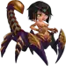 ジリ (Ziri) | 力 & アーマー | 体力 & アーマー貫通 | 第1 |
現在タリスマンを入手する方法
現在もっとも確実にタリスマンを狙える方法は、Talisman Fever イベントです。 このイベント内で最も重要なのが Keepers' Shop で、ここでは Talisman Coins を使って、その月のローテーションで登場しているタリスマンを購入できます。
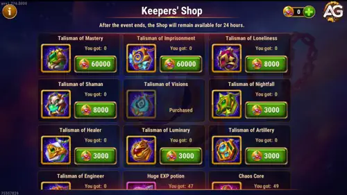
ここで最も重要なのは、イベントで手に入るタリスマンは月ごとのローテーションで変わる という点です。 つまり、欲しいタリスマンがはっきり決まっていても、次のイベントで登場する保証はありません。 ゲーム内に追加されるタリスマンが増えるほど、特定のタリスマンがいつ再登場するかは読みづらくなります。
そのため、初心者は 完璧さ よりも 機会 を重視して考えるべきです。 いつも使っているヒーローのタリスマンが出たなら、理想の選択肢を何か月も待つより、今ここで確保する方が賢いことがよくあります。
現在のイベントのミッション内容を詳しく見たい場合は、こちらの完全ガイドをどうぞ: Hero Wars AllianceのTalisman Feverイベント攻略.
| 入手元 | 仕組み | 初心者向けの使い方 |
|---|---|---|
| Talisman Fever | 期間限定イベントのミッションを進めて、各種通貨を集めます。 | コインと強化素材を同時に集められるので、最初の入口として最適です。 |
| Keepers' Shop | その回のイベントで登場しているタリスマンにTalisman Coinsを使います。 | 普段から主力として使っているヒーローのタリスマンを買いましょう。 |
| Frontier Shop | タリスマンが日替わりオファーに並ぶことがありますが、高価です。 | 後半では有効ですが、Frontier Coinsは貴重で貯まりにくいため、多くの初心者には重い選択です。 |
各通貨の使い道
Talisman Feverは、3つの主要通貨の役割を理解すると一気にわかりやすくなります。 新規プレイヤーはこれらを混同しやすく、間違ったものから先に使ってしまい、結果として進歩していないように感じがちです。
| 通貨 | 用途 | 初心者向けヒント |
|---|---|---|
 Talisman Coin
Talisman Coin
|
Keepers' Shopで、そのイベント中に販売されているタリスマンを買うために使います。 | 狙っているタリスマンが並んでいるなら、通常はこれが最優先です。 |
 Mastery Crystal
Mastery Crystal
|
タリスマンのレベルを上げるために使います。 | 序盤に多くのヒーローへ分散させないこと。弱いタリスマンを5つ持つより、しっかり育った1つの方が価値があります。 |
 Meta Cube
Meta Cube
|
タリスマンのボーナスステータスをリロールするために使います。 | どのヒーローが長く主力に残るか分かるまでは、温存するのが安全です。 |
シンプルに言えば、Talisman Coinsは本体を手に入れるため、Mastery Crystalsはレベルを上げるため、Meta Cubesはボーナスステータスを改善するために使います。 これだけでも覚えておけば、多くのプレイヤーより一歩先に進めます。
リロールはどう機能する？
Hero Wars Allianceでは、各ヒーローに固有のタリスマンがあります。ヒーローの最初のタリスマンは、通常そのヒーローのメイン属性に沿った性能を持ち、さらに3つのボーナスステータス用スロットを追加します。 これらのボーナススロットはヒーローによって異なり、魔法攻撃、魔法貫通、物理貫通、アーマー貫通、HP、アーマーなど、さまざまな有用ステータスになることがあります。
2つ目のタリスマンはかなり違う内容になることがあります。2種類の異なるメイン属性を持つ場合があり、時にはその組み合わせがより強力だったり、特定のビルドに合っていたりします。 ただし、タリスマン2が常に上位という意味ではありません。多くの資源を使う前に、そのヒーローと自分のチームにとって本当にどちらが役立つかを比較しましょう。
3つ目のタリスマンは現時点ではまだ存在しないため、現在の実際の選択肢は多くの場合、タリスマン1とタリスマン2のどちらかです。 まずはMastery Crystalsを使ってタリスマンのレベルを上げましょう。タリスマンはレベル50まで強化でき、レベルが上がるにつれてリロールスロットが解放されます。 3つ目のボーナススロットはレベル50でのみ解放されます。
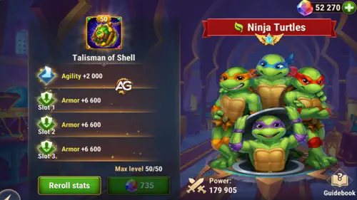
そのため、本格的にリロールを狙うなら、より多くのスロットを解放した後、特にレベル50到達後が最適です。 問題は2つあります。まず、タリスマンの価値を最大限に引き出すには3つのスロットすべてが必要です。次に、3つすべてを最大値にするのは非常に難しいという点です。 Alexandreがこれまでに3スロットすべて最大値を達成できたのは、ティーンエイジ・ミュータント・ニンジャ・タートルズだけです。それほど完璧なリロールはまれです。
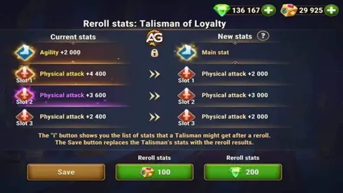
各リロールは、エメラルドまたはMeta Cubesで行えます。 Meta CubesはイベントやHarborで入手できます。 Harborの仕組みを知りたい場合は、こちらのHero Wars Harbor Guideを読んでください。
Talisman Fever初心者向けプラン
始めたばかりだと、このイベントは圧倒的に感じるかもしれません。ログイン、エネルギー消費、エメラルド使用、時には課金要素まで、ミッションが広く散らばっているからです。 もっとも安全な進め方は、目標を小さく、そして明確に保つことです。
ステップ1: イベント開始前に1人だけ選ぶ
主力チームの中から1人だけ選びましょう。未来の理想編成ではありません。いつか育てるかもしれないヒーローでもありません。 今この瞬間に、キャンペーン、アリーナ、タワー、ギルド活動で使っているヒーローを選んでください。
ステップ2: まずショップのローテーションを確認する
Talisman Feverが始まったら、資源を使う前にKeepers' Shopを確認してください。 欲しいタリスマンが無いなら、勢いで全部使ってしまうより、一部の資源を温存して次回イベントを待つ方が良い場合があります。
ステップ3: 簡単なミッションから終わらせる
初心者は、自然に達成できるミッションに集中すべきです。ログイン、キャンペーンエネルギー消費、日常的な資源の使用などです。 課金前提のマイルストーンや極端に高い消費目標は、ほとんどのプレイヤーにとって序盤の狙いではありません。
ステップ4: 追加素材より先にタリスマン本体を買う
選んだタリスマンが並んでいるなら、通常はリロール素材を増やすより先に本体を確保する方が重要です。 そもそも欲しいタリスマンを持っていなければ、Mastery CrystalsやMeta Cubesを使っても恩恵は受けられません。
ステップ5: 計画的にゆっくり強化する
タリスマンを手に入れても、すぐに完璧なリロールを狙って急ぐ必要はありません。 まずは毎日のプレイで価値を返してくれるヒーローのタリスマンを育てましょう。 完全な最適化は後回しで構いません。初心者にとって重要なのは、実用的な前進です。
初心者に必要な考え方
最初の数回のイベントで、成功とはすべてを手に入れることではありません。 成功とは、自分のアカウントに明確な改善をひとつ持ち帰ることです。使えるタリスマンをひとつ、より強くなったヒーローをひとり、そして無駄を減らした資源管理です。
初心者はFrontier Shopで買うべき？
はい、Frontier Shop のタリスマンが買う価値を持つことはあります。ただし、初心者にとっては通常かなり重いルートです。 これらのタリスマンは日替わりオファーに並び、ショップ内でも特に高価な部類なので、早い段階で買うと他の急ぎの育成に必要なコインを失いやすくなります。
だからといって、永遠に無視すべきという意味ではありません。大事なのは、今の自分の必要性と比較することです。 アカウント全体にまだ幅広い強化が必要なら、Frontier Shopの日替わりタリスマンを買うことで全体の進行が遅れる可能性があります。 一方で、主力チームがすでに安定していて重要なタリスマンが出たなら、その購入は十分に正当化できます。
まだアカウントを育成中なら、Frontier CoinsはTalisman Feverのイベント通貨よりも貯めにくいのが普通です。 そのため、多くの初心者はまずイベントで最初の重要タリスマンを確保し、その後でFrontier Shopのオファーを追い始めます。
Frontierシステムをもっと理解したい場合は、こちらのガイドを読んでください: Hero Wars AllianceのEternal Frontierガイド.
新規プレイヤーによくあるミス
- すべてのタリスマンを集めようとすること: ローテーションは広すぎるため、初心者には種類より集中が必要です。
- Meta Cubesを早く使いすぎること: 早すぎるリロールは、あとで主力から外れるヒーローに資源を浪費しがちです。
- ヒーローを確認せずに買うこと: 今日の自分のアカウントを実際に支えているヒーローは誰かを常に考えましょう。
- イベントのミッションページを見ないこと: 通貨の入手元が分からないとイベントが運任せに感じます。ミッションガイドを確認し、進行を計画してください。
- Frontier Coinsを衝動的に使うこと: Frontier Shopのタリスマンは魅力的ですが、高価であり、いつも最初の最善手とは限りません。
クイックFAQ
すべてのタリスマンが必要ですか？
いいえ。ほとんどの初心者は、一度にひとりの主力ヒーローへ集中すべきです。 よく選ばれた少数のタリスマンは、ランダムで未完成なタリスマンの寄せ集めよりずっと価値があります。
欲しいタリスマンがイベントショップに無い場合は？
その場合、待つことも戦略の一部です。タリスマンは毎月のTalisman Feverイベントでローテーションするため、欲しいものが戻るまで時間がかかることがあります。 だからこそ、自分のアカウントに不要なものへ焦って使うのは避けるべきです。
Talisman Feverで最初に何を買うべきですか？
多くの場合、まず主力ヒーローのタリスマン本体、その次に強化素材です。 本当に欲しいタリスマンを確保しないまま素材ばかり買うと、後で大きな不満につながります。
Frontier Shopはタリスマン入手先として悪いですか？
いいえ。ただ、多くの新しいアカウントにとっては高価で遅いルートというだけです。 Frontier収入が安定してくると、評価はかなり上がります。
無課金や微課金は何に集中すべきですか？
自然に達成できるイベントミッションに集中し、Talisman Coinsを守り、すべてのプレミアム目標を追う圧力は無視してください。 賢い1回の購入は、急いだ10回の判断よりずっと役に立ちます。
まとめ
現在のHero Wars Allianceのタリスマンシステムは、単にランダムイベントを待つだけのものではありません。 今では Talisman Fever、Keepers' Shop、月ごとのローテーション、そして時折登場する Frontier Shop のタリスマンまで理解する必要があります。
初心者にとって最善の進め方はシンプルです。通貨の役割を覚え、イベントショップをよく確認し、すでに使っているヒーローのために買い、すべてを同時に追いかける必要はないと理解することです。 「どうやって全部のタリスマンを取るか？」ではなく、「今の自分のアカウントを最も助けるのはどれか？」と考え始めると、このゲームはずっと分かりやすくなります。
毎月のイベントをより細かく追いたいなら、最新のイベントガイドをチェックし続けてください。ローテーションは資源そのものと同じくらい重要です。
おすすめ動画
こちらもおすすめ:


コメント欄
Alexandre Games Blogのタリスマンガイドページで会話に参加するには、下のボタンをクリックしてください: